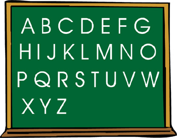

| 全民英檢 | |||||||||||||
| GEPT(General English Proficiency Test 全民英語能力分級檢定測驗 )，是教育部123補助研發，由語測中心主辦在民國八十九年開始舉辦至今日，受到社會各界的重視與採認，適用對象由原先的『全民』，慢慢修正至目前針對成人英語的檢測，總共分為初級、中級、中高級、高級及優級測驗，考生可依自已的能力選擇適當級數報考。全民英檢推出至今，普遍受到社會大眾的重視與好評，迄今已達三十五萬人次報考。 全民英檢測驗分為初試與複試，包括聽力、閱讀、口說及寫作等四項能力的檢定，且規定需通過初試者才能參加複試，凡通過所報考級數即可取得該級的合格證書。全民英檢提供國內各階段英語學習者公平、可靠、且具效度的英語能力評量工具並且順勢推動全民學外語的政策，落實「終身學習」的教育理念。全民英檢各級程度能力對照表： |  | ||||||||||||
| 全民英檢測驗分為初試與複試，包括聽力、閱讀、口說及寫作等四項能力的檢定，且規定需通過初試者才能參加複試，凡通過所報考級數即可取得該級的合格證書。全民英檢提供國內各階段英語學習者公平、可靠、且具效度的英語能力評量工具並且順勢推動全民學外語的政策，落實「終身學習」的教育理念。全民英檢各級程度能力對照表： | |||||||||||||
|
|||||||||||||
| 全民英檢對於生活在台灣，或需要在台灣作短暫或是長期就學與工作的人而言，是一份不可缺少的英語能力檢定。 鑑於「全民英檢」對於英語教學的重要性，本測驗提供全民英檢模擬考題，完全依照「全民英檢」的等級標準與題型模組，聘 請專業的教師編寫考卷內容，並利用網路科技讓學員便於參加模擬測驗，迅速增強實戰的經驗。 | |||||||||||||